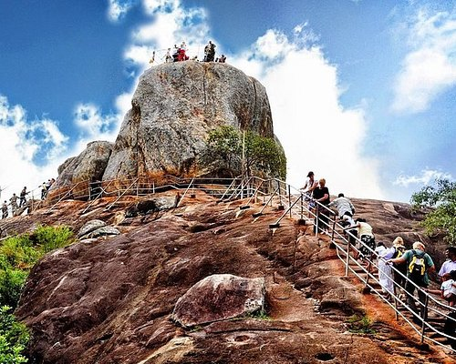

Anuradapura
245 rewives
North Central Province, Sri Lanka
.jpg)
.jpg)
.jpg)
.jpg)

HISTORICAL PLACE IN SRI LANKA
An important ancient site
25,000 LKR one day
ANURADAPURA
Anuradhapura (Sinhala: අනුරාධපුරය, romanized: Anurādhapuraya; Tamil: அனுராதபுரம், romanized: Aṉurātapuram) is a major city located in north central plain of Sri Lanka. It is the capital city of North Central Province, Sri Lanka and the capital of Anuradhapura District. The city lies 205 km (127 mi) north of the current capital of Colombo in the North Central Province, on the banks of the historic Malvathu River. The city is now a World Heritage Site famous for its well-preserved ruins of the ancient Sinhalese civilization. While Mahavamsa place the founding of the city in 437 BCE, the site has been inhabited for much longer, making it a major human settlement on the island for almost three millennia and one of the oldest continuously occupied cities in Asia. It is the cradle of the Hydraulic Sinhalese civilization, Theravada Buddhism, and the longest-serving ancient capital of Sri Lanka that has survived for 1500 years. Moreover, It was the first capital of the Sinhalese kingdom of Rajarata, following the kingdoms of Tambapanni and Upatissa Nuwara. Anuradhapura was also the center of Theravada Buddhism for many centuries and has been a major Buddhist pilgrimage site with ruins of many ancient Buddhist temples, including the famous Mahāvihāra and the Jaya Sri Maha Bodhi, the oldest still-living, documented, planted tree in the world[1] and that is believed to have originally been a branch of the sacred fig tree at Bodh Gaya (Bihar, India), under which Gautama Buddha attained Enlightenment. These vast network of ancient temples and monasteries now cover over 40 sq km of area of the city today. The city was mostly destroyed and largely deserted after 993 CE, with the Cholar invasion from South India.[2] Although several attempts were made by later Sinhalese kings to return the capital to Anuradhapura, it was not re-established as a major population center of the island until the British colonial era in the 19th century CE. The revival of the current city began in earnest in the 1870s. The contemporary city, much of which was moved during the mid-20th century to preserve the site of the ancient capital, is a major road junction of northern Sri Lanka and lies along a railway line. The city is the headquarters of Sri Lanka’s archaeological survey, and tourism is a significant factor in its economy.
VALUE OF ANURADAPURA
According to historical records such as Mahavamsa, the origin of the name Anuradhapura is traced to the minister named 'Anuradha' in the court of Prince Vijaya (543–505 BCE), the first Sinhalese king of the island. According to the legends related to Vijaya, his minister named 'Anuradha' established the settlement that later became Anuradhapura. However, the finding of earlier settlements in the citadel area of the old city dating back to until 10 century BCE would doubt this claim. The name 'Anuradhapura' means the 'city of Anuradha' (Anuradha+pura), where "pura" stand for 'city' in Sanskrit, Pali, and Sinhala. However, before Anuradhapura was considered a city, it was called the 'Anuradhagrama,' meaning the 'village of Anuradha' (Anuradha+grama).[3] This older name was also mentioned in the work of ancient Greek and Roman scholars such as Strabo and Claudius Ptolemy.[4] In Ptolemy's world map from 2 century CE, the place was named 'Anourogrammoi.' Thus, It is believed that the expansion of this earlier smaller settlement called Anuradhagrama into a city during the reign of Sinhalese king Pandukabhaya (474–367 BCE) in 437 BCE caused the change of the name to Anuradhapura.[3]places
.jpg)
.jpg)
A series of underground conduit terracotta pipes use gravitational force and hydraulic pressure to send water from the Sigiriya tank (with a slightly higher elevation than the gardens) into the different pools, fountains and streams throughout the impeccably organised gardens.
LOCATION ON MAP
PLACE TO STAY IN ANURADAPURA(Following accommodation list is randomly generated) Hotels & Other Accommodation)
RECOMMENDRD PLACES

GAJA HOTEL
Email:-@gmail.comanurdapura god street Tell:-0714406134

LALITHA HOTEL
Email:-@gmail.comanurdapura god street Tell:-0714406134

NORA HOTEL
Email:-@gmail.comanurdapura god street Tell:-0714406134

YANULA HOTEL
Email:-@gmail.comanurdapura god street Tell:-0714406134
- Entire house you will have the entire flat for you
- Echanced Clean This host has committed to Sl tro's cleaning process
- Great Location 90% of recent guest gave the location a 5 star rating
- Great Check-in Experience 100% of recent guest gave the check-in process a 5 star rating

COME AND ENJOY THE BEAUTY OF LANKA
open every day, We will work to provide 100% good service